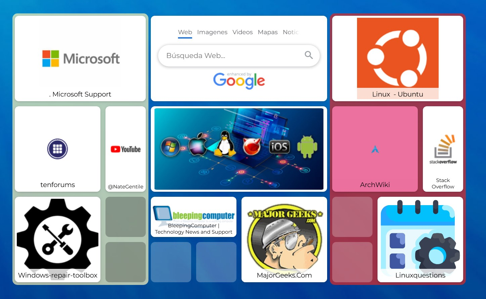

.
En el siguiente enlace encontrarás herramientas y web en las que encontrar las soluciones a los problemas planteados:
- Sistema de ayuda de Microsoft.
- Sistema de ayuda de Ubuntu.
- Web con soluciones de problemas en ambos sistemas.
- Web con videotutoriales.
- IA orientadas a Sistemas Operativos.
